Analyzing Scalar Fields Through Topological Similarity
Brian Bollen
Professor Joshua Levine (Computer Science, University of Arizona)
Professor Elizabeth Munch (Computational Mathematics, Science, and Engineering at Michigan State University)
Professor Erin Wolf Chambers (Computer Science at Saint Louis University)
Why Use Topology for Data Analysis
Provides structural summaries of data with natural ways to scale data appropriately.
Computationally robust due to discrete nature and readily available to map to visual features.
Scalar Fields
Definition 1.1
Let $\mathbb{X}$ be a topological space and let $f:\mathbb{X} \to \mathbb{R}$ be a continuous, real-valued function. The pair $(\mathbb{X},f)$ is called a scalar field.
Definition 1.2
Let $U \subseteq \mathbb{X}$ be such that $f(x) = f(y) = a$ for all $a \in U$. We say that $U$ is the $a$-fiber or $a$-levelset of the scalar field $(\mathbb{X},f)$.
Reeb Graphs
Definition 1.3
Let $(\mathbb{X},f)$ be a scalar field. We can define an equivalence relation on $\mathbb{X}$ by defining $x\sim y$ if $f(x) = f(y) = a$ (they belong to the same $a$-fiber) and if $x,y$ are in the same path connected component of the $a$-fiber. Let $\mathbb{X}_f$ be the quotient space $\mathbb{X}/\sim_f$ and let $\tilde{f}$ be defined as $\tilde{f} \circ \rho = f$, where $\rho: \mathbb{X} \to \mathbb{X}_f$ is the quotient map defined by our equivalence relation. Then the pair $(\mathbb{X}_{f},\tilde{f}) =: \mathcal{R}_f$ is called the Reeb Graph of the scalar field $(\mathbb{X},f)$.
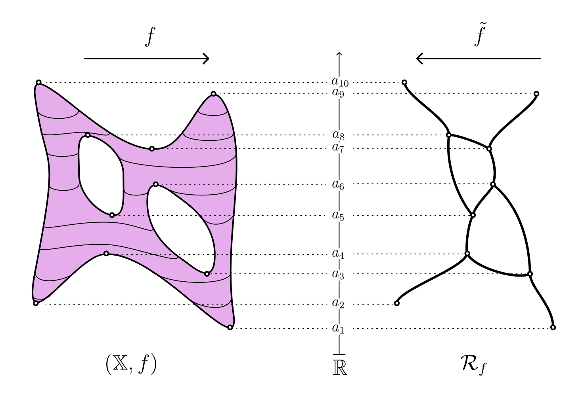
Without sufficient restrictions on $(\mathbb{X},f)$, it is possible to have Reeb graphs which are not well-behaved. We restrict our treatment to dealing with Morse functions defined on compact $2$-manifolds without boundary. This leads to a special case of the notion of constructible scalar fields.
Constructible scalar fields guarantee that the Reeb graphs are actually well-defined topological graphs with a finite number of vertices.
Scalar Fields and Reeb Graphs
On the left, we have an example of a scalar field whose topological space is the surface of the dragon shape, and the function is its height (shown via color). On the right, we have the Reeb graph (contour tree) embedded within the dragon, whose opacity has been decreased. Image generated from [dragon.pvsm in TTK]
Multifaceted Data and Topological Metrics
Multifaceted data includes data types such as a simulation run multiple times with varying parameters to determine variation and uncertainty (multirun), multivariate data which come from multiple sources (multimodal), and multiphysics simulations (multimodel).
If topological summaries are useful for studying single scalar fields, it is natural to consider comparing multiple scalar fields using metrics on these topological structures.
Bottleneck Distance
Interleaving Distance
Functional Distortion Distance
Edit Distance
Persistence Diagrams
Reeb Graphs
Current Work
Constructing a comprehensive Survey of Reeb graph distance metrics to provide the following contributions:
provide concrete examples for these distances to help develop the intuition of new researchers;
provide returning researchers a reference for fundamental properties of each metric;
compare and contrasts the various metrics and introduce a common nomenclature for their properties in general;
provide guidelines for which applied scenarios each metric would be well-suited;
discuss the computational hurdles and the literature of possible simpler cases for each metric, such as the merge tree and contour tree.
Persistence Diagrams
Definition 1.3
Each critical point of a scalar field corresponds to the creation or deletion of a feature. We track this by looking at the evolution of Homology groups as we introduce critical points, in increasing function order. The persistence measures the length of time it takes for a feature to be born and then die (birth and death time). The persistence diagram encodes this information by plotting a point $(a,b)$ where $a$ is the birth time and $b$ is the death time.
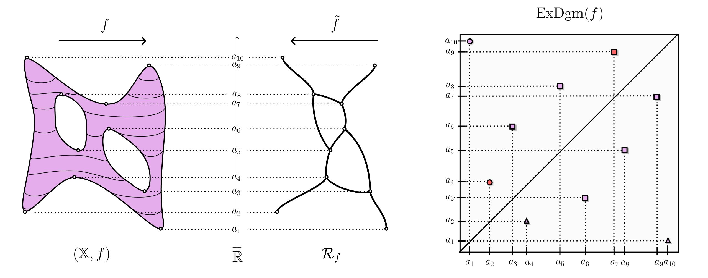
Bottleneck Distance
Definition 1.4
Let $(\mathbb{X},f),(\mathbb{Y},g)$ be two scalar fields and $X:=\text{ExDgm}_d(f),Y:=\text{ExDgm}_d(g)$ be the their corresponding $d$-dimensional extended persistence diagrams. We define the bottleneck distance $d_B$ between these diagrams as \[d_B(X,Y) = \inf_{\eta: X \to Y} \sup_{x \in X}||x - \eta(x)||_{\infty},\]
where $\eta$ is a bijection between $X,Y$.
Different Scalar fields with a bottleneck distance of 0
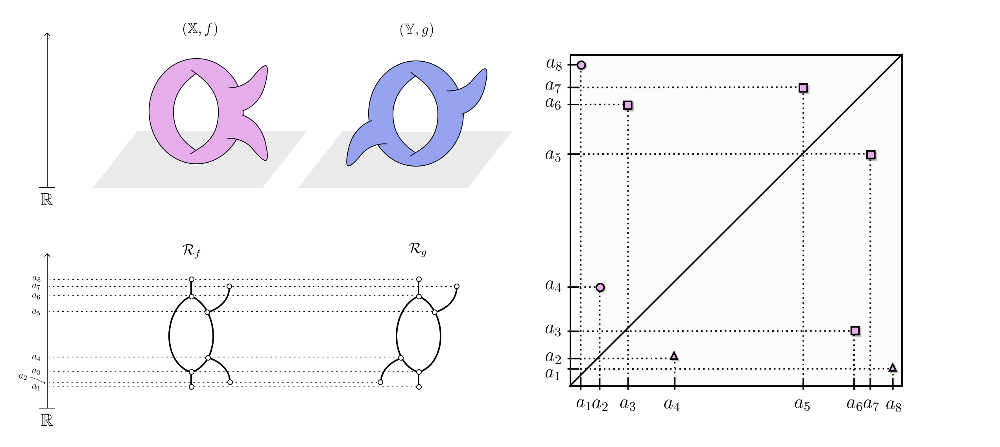
Reeb Graph Edit Distance
Edit distances have been classically used in both graph theory to define the distance between graphs while also being useful in areas such as string matching.
The Reeb graph edit distance allows a set of elementary deformations in order to carry one Reeb graph $\mathcal{R}_f$ to another $\mathcal{R}_g$. We assign a cost to the sequence that achieves this, and then take the distance to be the minimum cost over all sequences.
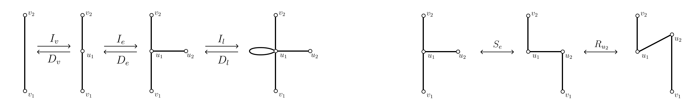
Reeb Graph Edit Distance
Definition 1.7
The Combinatorial Reeb graph of $\mathcal{R}_f$ is the labeled multigraph $(\Gamma_f,l_f)$, where $l_f$ is the labeling of the vertices $V(\Gamma_f)$ such that $l_f = f|_{V(\Gamma_f)}$.
Definition 1.6
The cost of a sequence $S$ carrying $\Gamma_f$ to $\Gamma_g$ is the maximum relabeling difference among all operations in the sequence. The Reeb graph edit distance $d_C$ is the minimum cost over all sequences carrying $\Gamma_f$ to $\Gamma_g$.
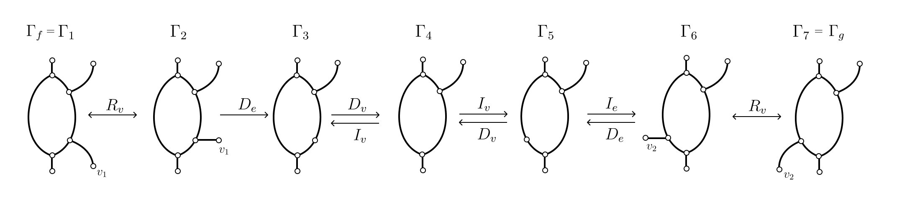
Reeb Graphs to Pre-Cosheafs
A pre-cosheaf is an assignment of data to open sets of a topological space $\mathcal {X}$ such that if $I \subseteq J$, then the data attached to $I$ maps to the data attached to $J$.
We can convert a Reeb graph $\mathcal{R}_f$ to a pre-cosheaf $\mathsf{F}$ by assigning the intervals $I$ of the real line to $\pi_0(f^{-1}(I))$, where $\pi_0$ denotes the set of path-connected components.
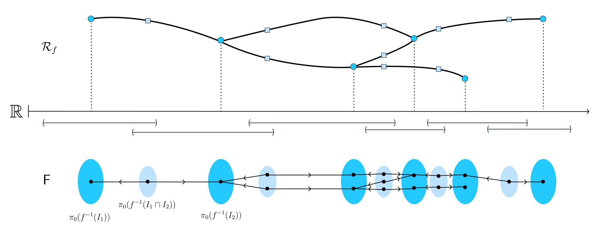
Smoothing Reeb Graphs
The operation of smoothing pre-cosheafs is a well-defined functor on the category of pre-cosheafs which essentially removes data present in small intervals by increasing the size of each interval $I$ by $2\varepsilon$.
$\mathsf{F}$ represents the pre-cosheaf of $\mathcal{R}_f$ and $\mathcal{S}_{\varepsilon}(\mathsf{F})$ represents the smoothed pre-cosheaf. The smoothed pre-cosheaf passes each interval $I = (a,b)$ through a filter which changes it to $I^{\varepsilon} = (a-\varepsilon,b+\varepsilon)$.
Interleaving Distance
An $\varepsilon$-interleaving is an approximate isomorphism between pre-cosheafs which is constructed using mappings between smoothed pre-cosheafs. A $0$-interleaving is a well-defined isomorphism between two pre-cosheafs.
Definition 1.5
The interleaving distance $d_I$ between two Reeb graphs $\mathcal{R}_f,\mathcal{R}_g$ is defined as the minimum $\varepsilon$ such that there exists a $\varepsilon$-interleaving between the associated pre-cosheafs $\mathsf{F},\mathsf{G}$.
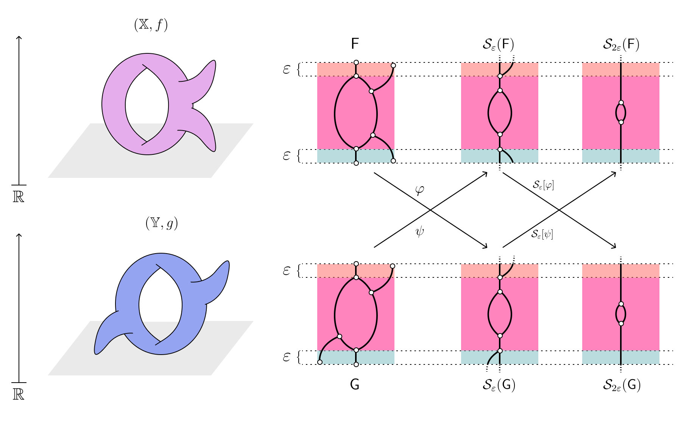
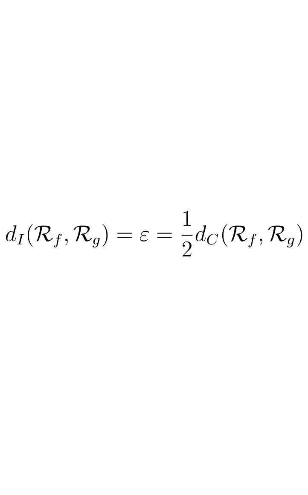
Gromov-Hausdorff and Functional Distortion Distance
Suppose $A$ and $B$ are two metric spaces and let $i_A:A \to Z$,$i_B:B \to Z$ be isometric embeddings into a common metric space $Z$. We can then find the Hausdorff distance between the embeddings: $d_H(i_A(A),i_B(B))$. The Gromov-Hausdorff distance defines the distance between $A$ and $B$ to be the infimum overa ll embeddings and common space $Z$.
The Functional distortion distance $d_{FD}$ between two Reeb graphs is essentially identical to the Gromov-Hausdorff for metric spaces, envisioning $\mathcal{R}_f$ and $\mathcal{R}_g$ as topological graphs.
Functional Distortion Distance
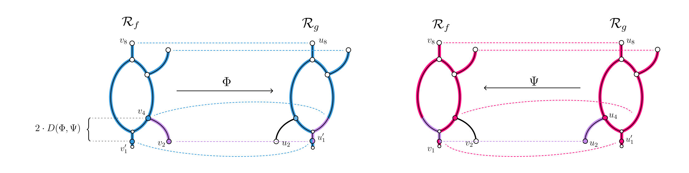
Distance Properties
Property 1 (Stability)
Let $(\mathbb{X},f),(\mathbb{X},g)$ be two constructible scalar fields defined on the same domain $\mathbb{X}$. We say that $d$ is stable if $d(\mathcal{R}_f,\mathcal{R}_g) \leq ||f-g||_\infty$.
Property 2 (Shift Sensitivity)
Let $g(x) = f(x) + \delta$, for some $\delta > 0$. We say that $d$ is shift sensitive if $d(\mathcal{R}_f,\mathcal{R}_g) > 0$.
Property 3 (Stretch Sensitivity)
Let $U$ be an open subset of $\mathbb{X}$. Define $g$ such that $g|_{\mathbb{X} - U} = f$ and $g|_{U} > f$. Then we say that $d$ is stretch sensitive if $d(\mathcal{R}_f,\mathcal{R}_g) > 0$.
Property 4 (Path Component Sensitivity)
Let $(\mathbb{X},f)$ and $(\mathbb{Y},g)$ be two constructible scalar fields and suppose $\mathcal{R}_f$ and $\mathcal{R}_g$ have a different number of path connected components. We say that $d$ is path component sensitive if $d(\mathcal{R}_f,\mathcal{R}_g) = \infty$.
Stretching and Shifting Sensitivity
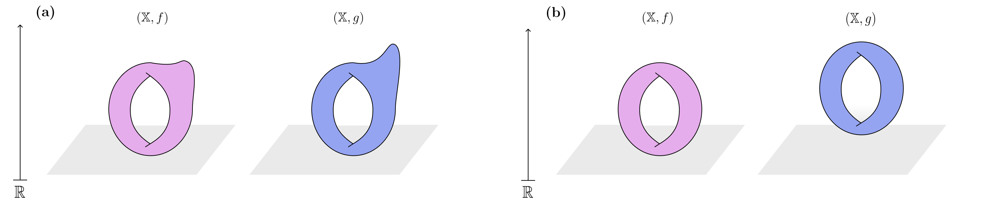
Distance Properties
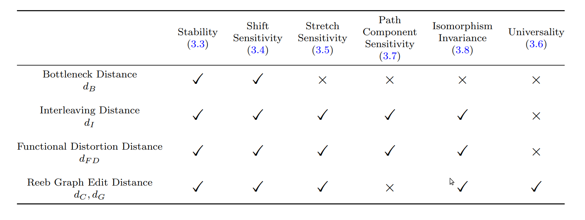
Insensitivy to Multiple Features
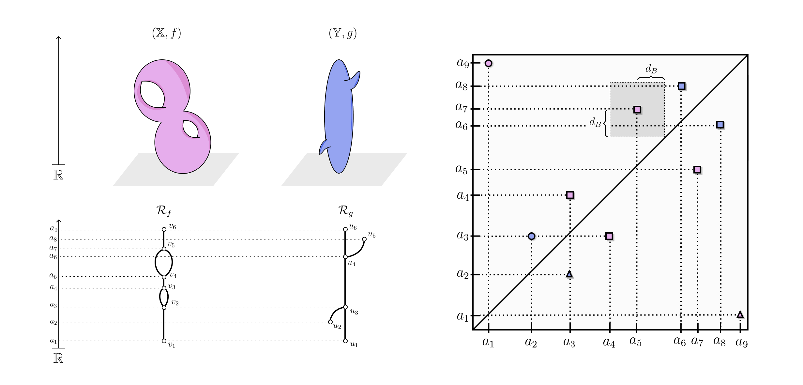
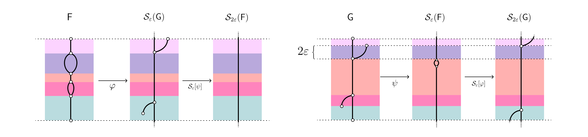
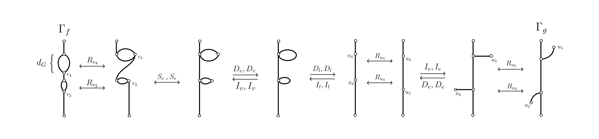
Wassterstein Distance
The Wasserstein distance is a variation of the bottleneck distance which is sensitive to multiple feature differences in the data
Definition 1.7
Let $(\mathbb{X},f),(\mathbb{Y},g)$ be two scalar fields and $X:=\text{ExDgm}_d(f),Y:=\text{ExDgm}_d(g)$ be the their corresponding $d$-dimensional extended persistence diagrams. We define the $\mathbf{q^{th}}$-Wasserstein distance $d_{W_q}$ between these diagrams as \[d_{W_q}(X,Y) = \Bigg[\inf_{\eta: X \to Y} \sum_{x \in X}||x - \eta(x)||^q_{\infty} \Bigg]^{1/q}\]
where $\eta$ is a bijection between $X,Y$.
Computational Complexity of Each metric
Bottleneck distance is computationally reasonable, and has been used in many TDA applications
Interleaving Distance is at least graph-isomorphism hard (NP-hard).
There exists no polynomial time algorithm for Functional Distortion Distance (nor the Gromov-Hausdorff distance)
There exsists no polynomial time algorithm for Reeb graph edit distance. Edit distances have been shown to be difficult to compute in general.
(Our) Future Work
Alter the Reeb graph edit distance to be sensitive to multiple features -- similar to Wasserstein distance
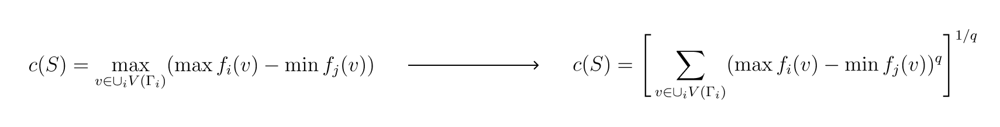
The resulting metric should have similar properties as the original Reeb graph edit distance, in addition to sensitivity to multiple featurs. But most likely we will lose stability (in the previously defined sense) and universality would be difficult to formulate.
After, use current techniques in graph similarity learning to compute this theorized metric on Reeb graphs
We can (hopefully) compute this edit distance on a set of small enough graphs by hand or via other computational methods to use for training.
(Other Possible) Future Work
Alter Functional Distortion distance and Interleaving distance to be sensitive to multiple features.
Investigate computational hurdles for simpler cases such as contour tree and merge tree.
Investigate specific hurdles of each distance to see if there is area for compuatational improvement.